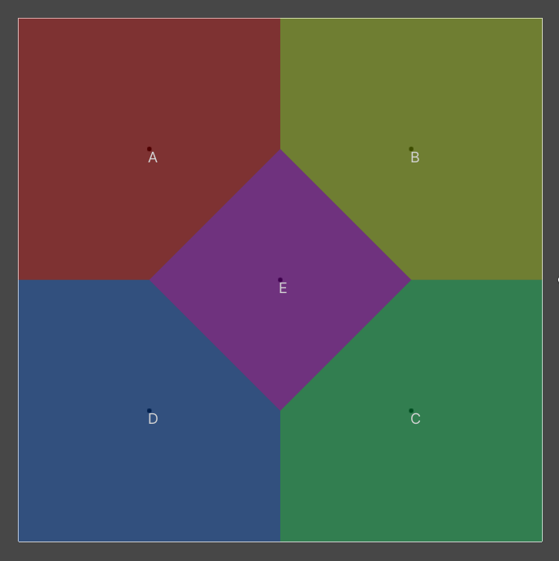

Geometry 2D
This assembly provides common 2d shapes used in game development (etc. circle, rectangle, line, capsule, convex polygon...). Those shapes contain useful functions like:
- Testing if shapes
Overlap. - Finding minimum
Distancebetween shapes. - Finding
BoundingRectangle,InscribedCircle,CircumscribedCircleon the shape. - Finding
Intersectionof shape and ray.
Convex Polygon
There are two APIs for executing convex polygon operations.
ConvexPolygoncontainer that needs to be allocated.ConvexPolygonUtilitystatic class that can be used with already allocated points array.
Voronoi
Voronoi is a partition of a plane into regions close to each of a given set of objects. In the simplest case, these objects are just finitely many points in the plane (called seeds, sites, or generators). For each seed there is a corresponding region, called a Voronoi cell, consisting of all points of the plane closer to that seed than to any other.
Voronoi generated from 5 sites named A, B, C, D, E.
Voronoi logic is separated into two structures:
VoronoiBuilder- used for gathering sites and constructing voronoi shape.IVoronoiOutput- the interface used for ouputing voronoi shape.
Voronoi Builder
Structure used for building voronoi. The usage of API is quite simple.
// Allocating builder
var builder = new VoronoiBuilder(1, Allocator.Temp);
// Adding site at point 0, 0
builder.Add(new double2(0, 0));
// Outputing the voronoi into `IVoronoiOutput`
builder.Construct(ref output);
// Destroying
builder.Dispose()
IVoronoiOutput
This interface is used by VoronoiBuilder to call specific callback for constructing voronoi.
// Callback after VoronoiBuilder processes the site.
void ProcessSite(double2 point, int index);
// Callback after VoronoiBuilder processes the vertex.
int ProcessVertex(double2 point);
// Callback after VoronoiBuilder processes the edge.
void ProcessEdge(double a, double b, double c,
int leftVertexIndex, int rightVertexIndex,
int leftSiteIndex, int rightSiteIndex);
// Callback after VoronoiBuilder finished building.
void Build();
Here is very simple example that draws wireframe of voronoi.
struct CustomVoronoiOutput : IVoronoiOutput
{
NativeList<float2> m_Vertices;
public CustomVoronoiOutput(Allocator allocator)
{
m_Vertices = new NativeList<float2>(allocator);
}
public void Dispose()
{
m_Vertices.Dispose();
}
public void ProcessSite(double2 point, int siteIndex)
{
ShapeGizmos.DrawText((float2)point, $"{(char)(65 + siteIndex)}", Color.white);
}
public void ProcessEdge(double a, double b, double c,
int leftVertexIndex, int rightVertexIndex,
int leftSiteIndex, int rightSiteIndex)
{
float extent = 120;
float2 leftVertex = leftVertexIndex != -1 ? m_Vertices[leftVertexIndex] : new float2(-extent, line((float)a, (float)b, (float)c, -extent));
float2 rightVertex = rightVertexIndex != -1 ? m_Vertices[rightVertexIndex] : new float2(extent, line((float)a, (float)b, (float)c, extent));
ShapeGizmos.DrawLine(leftVertex, rightVertex, Color.green);
}
public int ProcessVertex(double2 point)
{
ShapeGizmos.DrawSolidCircle((float2)point, 0.1f, Color.green);
m_Vertices.Add((float2)point);
return m_Vertices.Length - 1;
}
public void Build()
{
}
}
VoronoiDiagram
Structure used for constructing cells, edges and vertices that implements IVoronoiOutput.
DelaunayTriangulation
Structure used for constructing delaunay dual that implements IVoronoiOutput. Quite useful for mesh triangulation.